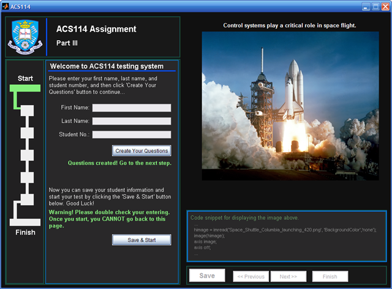

I’ve recently been asked to design a new testing system (toolbox) for the first year students of ACSE. The purpose is to create a easy-to-use Matlab GUI to help the student to fulfil a self-testing task.
After a few days work, I got my first GUI prototype (see below) which has dark background and light foreground.

I’m planning to improve this GUI by embedding a tab panel in the question zone. However, there is no standard tab panel GUI component in Matlab. So it has to be built either using the undocumented Java classes (need more Java *_* ) or using a group of the basic Matlab GUI components (more codes -_-P ). I’m going to show the final design when I finish this project.